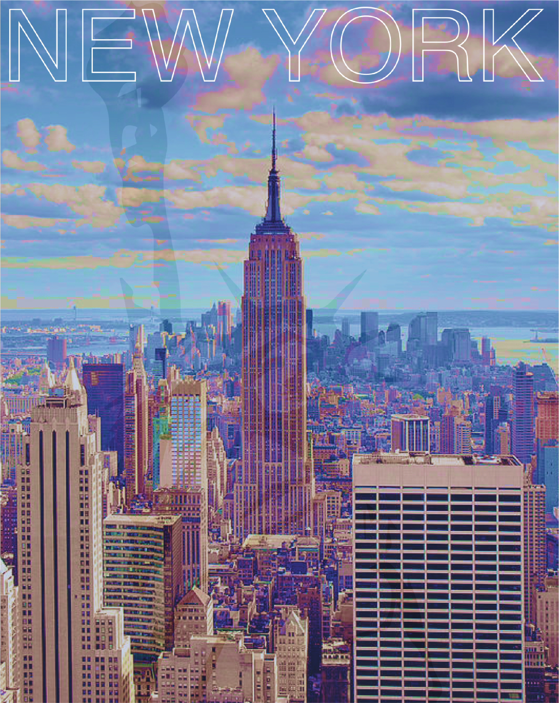

City Skylines
I initially designed the Tucson poster for the Tucson Folk Festival while in school at the University of Arizona and decided to further experimenting with cityskapes. Being from Dallas, I of course had to make one represnting my hometown and now as I am in New York, one for that journey.
